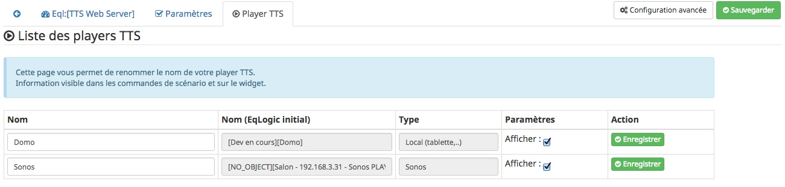
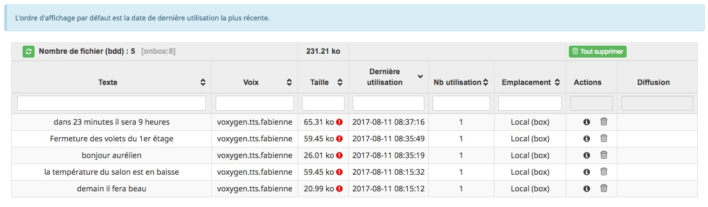

Description
Ce plugin vous permet de générer des messages TTS via un Web Service dédié hébergé sur Android (donc aucune utilisation du cloud).
Pour permettre cette fonction, ce plugin nécessite obligatoire l’installation de l’application Android du même nom (TTS Web Server).
Le plugin dispose des fonctionnalités suivantes :
-
de diffuser sur différents players
(*1):-
local sur l'équipement Android (téléphone, tablette,…) ;
-
Sonos ;
-
Squeezebox ;
-
Syno Audio ;
-
-
de sauvegarder les messages générés sur :
-
un espace de partage distant (ex: NAS Synology) ;
-
localement sur la box Jeedom ;
-
-
d’une bibliothèque des messages complètement administrable, ainsi que la possibilité d’utiliser tous les moteurs
(*2)installés sur votre équipement Android.
(*1): les plugins associés doivent obligatoirement être installés pour que la diffusion sur ces players fonctionnent correctement (pour certain, les commandes "dire" des plugin initiaux sont réutilisés).Remarque: si le plugin n’est pas installé, la diffusion de la synthèse par celui-ci ne sera pas proposé au niveau du TTS Web Server. (*2): par défaut, le moteur Google, mais aussi si vous achetez des voix supplémentaires (Voxygen par exemple). |
Les commandes du Serveur TTS peuvent être utilisées via le Widget (standard jeedom) sur les dashbord/design, mais également au niveau des scénarios.
|
* dans la suite du document, "TTS Web Server" est abrégé en "TWS". * sur les différentes interfaces (configuration, équipement, …) pour chaque paramètre, une icone avec un "?" permet d’obtenir des informations sur le paramètre et permet déjà d’apporter un niveau de compréhension. |
— Représentation des 2 widgets possibles
Configuration
— PRE-REQUIS avant toute utilisation
Ces "pré-requis" peuvent constituer une description pas à pas des tâches à suivre avant de commencer à utiliser le plugin.
-
Sur la page configuration :
-
Vérifier que les dépenses sont bonnes ;
-
Ne cocher la case "bouton "Ajouter"" que si la dépendance "ARP-SCAN" ne peut pas s’installer ;
-
Cocher l’option "Afficher le panel mobile" ;
-
-
Sur votre terminal Android :
-
Activer le paramètre "source inconnue" (généralement accessible dans les paramètres de sécurité) ;
-
Autoriser le stockage de fichier pour l’application TWS (action à faire, une fois l’installation terminée, étape ci-dessous) ;
-
-
Depuis l’interface mobile de Jeedom
(*1), se rendre sur le menu plugin ;-
cliquer sur l’icone TWS et installer l’application ;
-
lancer l’application ;
-
-
Sur la page des équipements :
-
lancer une découverte > les équipements (application distante TWS) apparaitront !
-
(*1) l’interface mobile est accessible via un navigateur Web, il n’est pas question ici de l’application mobile de Jeedom.
|
— Version Android
Pour l’installation de l’APK, le build minimum d’Android autorisé est le "19", correspondant à la version 4.4 (kitkat). Pour plus d’information se référer à la liste des versions.
— Installation et configuration du plugin
Après téléchargement du plugin, vous devez l’activer pour profiter de ces fonctionnalités.
Une mise à niveau / installation des "Dépendances" est fortement recommandée pour disposer de toutes les fonctionnalités du plugin.
(plus d’informations sur les dépendances)
Des paramètres de configuration vous sont proposés, mais les valeurs par défaut peuvent être conservées.
| Paramètre | Description |
|---|---|
Autoriser la diffusion sur |
Liste les types de player où le TTS peut être diffusé, dépend des plugins installés. |
(Maintenance) Autoriser la suppression des fichiers temporaires "résiduels" |
Si l’option est activée, une maintenant quotidienne (à 0h), est réalisée pour supprimer des différents répertoires du plugin les fichier générés temporairement. |
(Maintenance) Vérifier l’existance des fichiers |
Si l’option est activée, une maintenant quotidienne (à 0h), est réalisée pour vérifier si les fichiers listés dans la bibliothèque sont bien présents, en fonction du "lieu" de sauvegarde définie. |
(Maintenance) Rechercher les fichiers "orphelins" |
Permet de recherche les fichiers orphelins (présent sur l’espace de stockage, mais absent de la bibliothèque). 2 valeurs possibles: |
(Maintenance) Suppression fichiers anciens |
Permet de supprimer les fichiers dont la date d’utilisation est plus anciennes que la durée sélectionnées. |
(Distant) TimeOut des requêtes |
Définie la durée de timeout de la requête émise entre le plugin et l’application Android TTS Web Server. |
(Distant) Fréquence de récupération des logs |
Définie la fréquence à laquelle, le plugin TWS ira récupérer les logs disponible sur l’application Android TWS, pour les enregistrer localement sur jeedom. |
Modes autorisés pour l’ajout d'équipement distant "TTS Web Server" |
Propose 2 choix : le bouton "Ajouter" (avec saisie manuelle), et le bouton "Découverte". |
(UPDATE) Mettre à jour les noms des fichiers avec la voix, dans la bibliothèque (en bdd et au niveau du fichier). |
Cette action va permettre de valoriser la colonne "Voix" dans la bibliothèque. |
— Page des équipements TWS

Cette page se découpe en 3 zones :
-
la Gestion : permet d’afficher les outils de configuration du plugin :
-
"configuration" : accès à la page de configuration ;
-
"Réglages TTS" : accès aux paramètres du serveur (lieu sauvegarde, encodage, nom des commandes, …)
-
-
les applications distantes "TTS Web Server" (Android) :
-
bouton "Découverte" : permet de lancer la découverte de nouveau équipement sur le réseau
(*1); -
les Web Server distants découverts
(*2);
-
-
les players TTS :
-
bouton "Synchronise Player" : permet de lancer la synchronisation des players pour voir s’il y en a de nouveaux disponibles et configurés dans Jeedom. Tous les "types" de player configuré, disposera de sa propre commande.
-
les players détectés en fonction du plugin associé (remarque: ces icones ne sont pas cliquables, c’est juste informatif)
-
(*1): Pour disposer de ce bouton, les fonctions linux "ARP-SCAN" et "NC" doivent être installées.Par ailleurs, l’application Android doit être lancée, le device en service (non en veille) et l’application en écoute, sinon la découverte ne pourra pas se faire. (*2): une icone (play en vert), permet de savoir si l'équipement est actif. En passant la sourie, une date indiquant la dernière "validation" est affichée.
|
— Description des paramètres du Serveur TWS
Cette page est appelée via l'équipement "Réglages TTS" et permet de configurer le "coeur" du serveur TTS.
-
Cet équipement ne doit JAMAIS être supprimé ; le cas échéant, le plugin ne pourrait plus fonctionner.
-
S’il y avait suppression par erreur, en cliquant sur l’icone (globe), une proposition de recréation de l'équipement serait proposée.
L’onglet "Equipement" présente les informations standard de Jeedom :
-
Définition du Nom (Remarque: peut être modifié sans impact) ;
-
Objet parent : emplacement d’affichage de l'équipement ;
-
les statuts : activé et visible ; (Remarque: si cet équipement était désactivé, le plugin ne pourrait plus fonctionner).

L’onglet "Paramètres" présente les paramètres de configuration :

| Paramètre | Description |
|---|---|
=== Paramètres d’utilisation === |
|
Format de fichier/encodage |
Définie le format pour conserver les fichiers. Valeurs possibles: Wav ou MP3. |
Autoriser l’archivage |
Définie l’emplacement où seront stoqués les fichiers enregistrés. |
(si Distant) |
Permet de préciser l’adresse ip et le chemin d’accès au répertoire où les fichiers audios doivent être sauvegardés. |
(si Distant) |
Renseignez les utilisateurs et mot de passe pour accéder à l’espace de partage. |
Gestion de la diffusion en fonction de la voix |
Cette option permet de définir le comportement souhaité par rapport à un même texte à diffusion en fonction de la voix, 2 cas possibles: + — "Diffusion fichier existant, même si voix différente": au moment de la diffusion du message, si le message existe en bibliothèque avec une voix différente, le message est quand diffusé. + — "Générer un fichier systématiquement, si voix différente": au moment de la diffusion du message, si le message existe en bibliothèque pour une voix différente, un nouveau message est quand même généré avec le nouvelle voix ; vous aurez donc 2 foix le même contenu de message en bibliothèque pour 2 voix différentes. |
=== Liste des applications distantes "TTS Web Server" === |
|
Cette zone vous permet de définir l’ordre de solicitation des applications distantes TWS. Cette fonctionnalité est solicitée si vous diffuser un message sur un équipement autre qu’une tablette/téléphone (exemple: Sonos, ….) |
|
(*1): l’emplacement par défaut se trouve au même niveau que le répertoire "html" du serveur, et s’appelle "dataTTSWebServer". (exemple en configuration Apache: /var/www/dataTTSWebServer/) |
L’onglet "Player TTS" affiche les différents players disponibles :

Depuis cette page, vous pouvez renommer le nom des commandes qui ont été détectées comme des players potentiels pour la diffusion de TTS.
Ce nom apparait au niveau du widget (bouton de validation d’envoi du texte à synthétiser) sur le widget de l'équipement "Serveur".
Vous pouvez également paramétrer son affichage ou non (si la case est décoché, la commande ne sera pas affichée sur l'équipement "Serveur").
|
L’enregistrement de ce nouveau nom (ou changement de paramètres) doit obligatoirement être enregistré par le bouton "enregistré" au niveau de chaque ligne (colonne "Action"). |
— Description des paramètres des équipements de synthèque
Un bouton "dupliquer", permet de dupliquer l'équipement et les commandes associées.
L’onglet "Equipement" présente les informations standard de Jeedom (idem équipement "Réglage TTS").
L’onglet "Paramètres" présente les paramètres disponibles au niveau de l'équipement hébergent l’application TWS :

| Paramètre | Description |
|---|---|
=== Paramètres d’utilisation === |
|
Voix |
liste les voix disponibles sur cette équipement. (Remarque: disponible depuis la version Android 1.1) |
Pas de cache en lecture locale |
Par défaut, en lecture locale sur un équipement distant, le fichier audio généré par la synthèse est renvoyé; permettant de compléter la bibliothèque des messages. |
=== Paramètres de l’application "TTS Web Server" === |
|
Adresse IP (wifi) |
Les champs @IP et @Mac sont à renseigner uniquement si l’ajout de l'équipement est fait manuellement. |
=== Divers === |
|
Type d'équipement & Application |
Permet d’avoir une icone sur la page principale des équipements. |
L’onglet "Commandes" présente les commandes disponilbes au niveau de l'équipement local hébergent l’application TWS :
Ces commandes sont créées à la création de l'équipement. Vous ne pouvez ni en ajouter, ni en supprimer (elles seront créées lors d’un enregistrement).
Vous pouvez : modifier le nom, paramétrer si vous les afficher ou non et si vous souhaitez historiser les données ou non.
| Paramètre | Description |
|---|---|
Statut WS |
Remonte l'état du service de l’application TWS distante. |
Batterie |
Remonte le niveau de batterie de l'équipement distant où est hébergé l’application TWS (en %). |
Dire |
Cette commande permet d’envoyer une demande de diffusion TTS sur l'équipement distant.
(La même commande se retrouve aussi sur l'équipement "Serveur" pour l'équipement distant en question.) |
Relancer Service |
Cette commande permet de relancer le Service sur l’application TWS distante. |
L’onglet "Etats / Infos" présente de remonter des informations liée à l’application TWS :

La définition de chaque champ de cette page est décrite directement sur la page, via l’icone "?" à coté du titre.
(*1): le changement de voix entre moteur "Voxygen" est assez rapide. Toutefois le retour sur le moteur "Google" peut générer un temps de latence assez important.Il est donc déconseillé de faire "yoyo" entre les voix (du moins avec la voix Google), même pour tester ! |
— Assistance pour l’installation de l’application Android (APK)
L’APK n’est pas disponible sur le playStore, (pas la peine de le chercher).
L’installation peut se faire via le plugin en activant la page "mobile" dans la configuration du plugin.
Depuis votre mobile, allez sur le menu "Plugin", puis "TTS Web Server".
Une page rappelant les pré-requis pour l’installation est affichée.
Après avoir respecté ces pré-requis, cliquez sur l’icone TWS et l’apk est téléchargé sur votre android (téléphone/tablette), puis son installation est proposée.
|
REMARQUE: |

La bibliothèque des messages
Pour pouvoir la visualiser, vous devez activer le "panel desktop" depuis la page de configuration du plugin.

Ce tableau présente la liste des messages enregistrés et renseignés dans la bibliothèque du plugin.
Par défaut, l’ordre d’affichage correspond au dernier message synthétisé ou utilisé, mais l’ordre peut être modifié pour réaliser vos cherches.
L’utilisateur peut également filtrer les valeurs recherchées.
Des icones peuvent apparaitre, permettant d’identifier des points d’attention vis-à-vis du fichier :
-
"!" (à coté de la taille) : indique que le fichier présente une taille faible (inférieur à 90ko). Si vous utilisez ce fichier en lecture local ou via Squeezebox/SynoAudio, le fichier peut ne pas être lut correctement car pas assez volumineux pour "activer" une lecture.
-
"?" (à coté du l’emplacement) : impossible d’indiquer si ce fichier existe, car son emplacement est différent de celui configuré actuellement ;
-
"x" (à coté de l’emplacement) : le fichier n’a pas été trouvé à l’emplacement indiqué.
Le bouton "Tout Supprimer" permet de supprimer toutes les données présentes dans la bibliothèque, ainsi que les fichiers orphelins détectés sur l’espace de stockage en cours de configuration.
Fonctionnalités complémentaires disponibles
— Lecture spécifique des unités (scénarios)
Généralement, la diffusion de la température se fait de la manière suivante : "12,5 degrés".
Si vous rentrez ces informations dans un format spécifique dans votre champs de saisie, vous pourrez obtenir une diffusion au format "12 degrés 5".
Le format à utiliser est le suivant : @U|valeur|unité@, exemple: @U|12.5|degrés@, ou avec une commande jeedom : @U|\#[cuisine][oregon][température]#|degrés@.
A savoir :
* si les décimales égalent "0", le zéro n’est pas diffusé (exemple: @U|12.0|degrés@, il sera diffusé : "12 degré").
* la valeur de l’unité n’est pas obligatoire (exemple: @U|valeur@), … mais sans intérêt.
Les Dépendances
Les dépenses du plugin sont listées à l’adresse suivante :
https://github.com/abarrau/jeedom-plugin-ttsWebServer-doc/wiki/TTS-Web-Server-Plugin-:-liste-des-d%C3%A9pendances
Les API
— Application Android
Une API est mise à disposition pour comprendre et troubleshooter, les échanges entre le plugin et l’application.
Elle est disponible sur l’espace Github : l’API.
(Cette API nécessite une clé échangée entre le plugin et l’Apk).
— Intégration des fonctionnalitées TWS dans des plugins tiers
Une API est mise à disposition pour permettre aux développeurs de plugin tiers d’utiliser les fonctionnalité de ce plugin TWS, pour récupérer (par exemple) des fichiers audio issus du plugin TWS.
Elle est disponible sur l’espace Github : l’API.
Roadmap
-
diffusion en local sur la box jeedom ;
-
paramétrage de la voix "à la volé", via une commande (utilisable dans les scénarios) ;